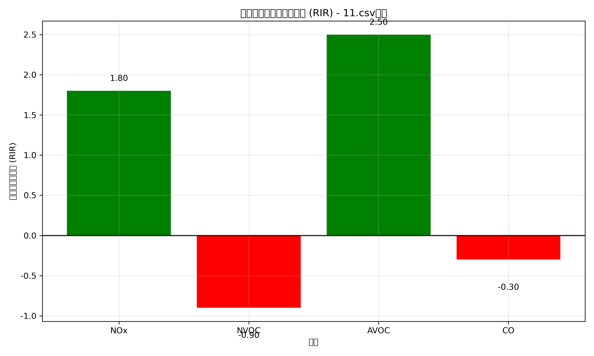
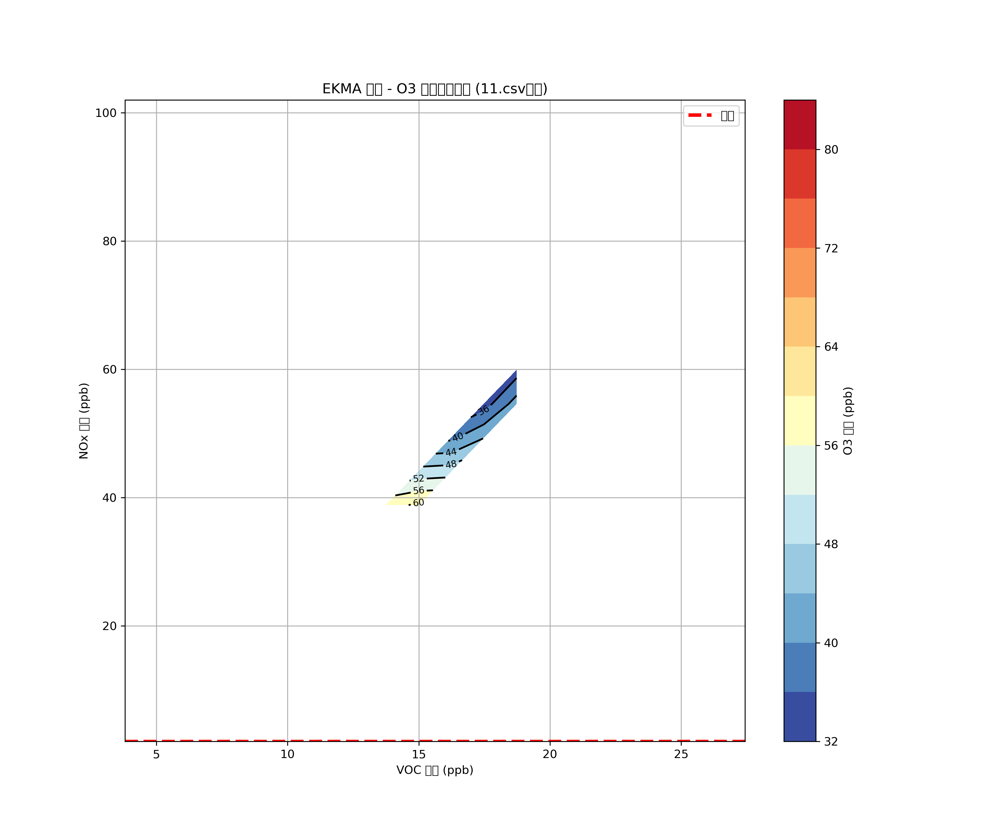
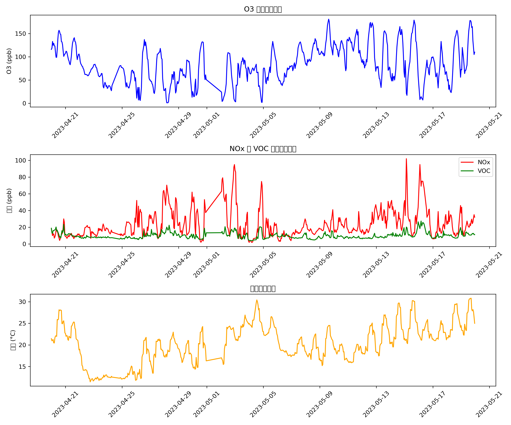

基于化学机制计算的 RIR 和 EKMA 曲线分析
数据包含 649 行，时间范围: 2023-04-20 00:00:00 至 2023-05-19 23:00:00
| 指标 | 平均值 | 最小值 | 最大值 | 标准差 |
|---|---|---|---|---|
| O3 (ppb) | 84.88 | 1.00 | 181.00 | 40.24 |
| NOx (ppb) | 23.35 | 2.01 | 102.01 | 16.17 |
| VOC (ppb) | 9.78 | 3.80 | 27.43 | 3.54 |
| CO (ppb) | 0.59 | 0.30 | 1.10 | 0.15 |
| 温度 (°C) | 20.32 | 11.44 | 30.81 | 4.50 |
RIR 表示各物种对臭氧形成的相对贡献，正值表示增加臭氧形成，负值表示减少臭氧形成。
EKMA 曲线显示不同 VOC 和 NOx 浓度组合下的臭氧浓度，脊线表示臭氧最大生成的条件。
各污染物和气象参数的时间变化趋势。
基于化学机制的分析表明：